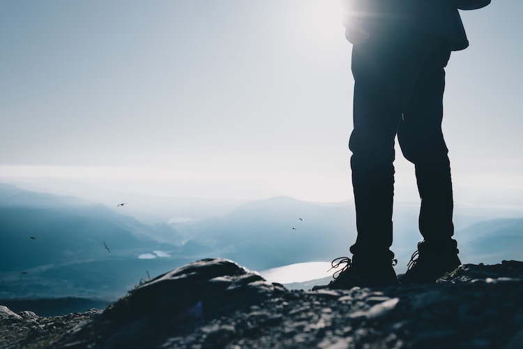

|  | Today, around 55 percent of the world's population is thought to be living in an urban area and that number is expected to rise in the coming years, yet only 3% of the world's land surface is covered with urban areas. Bucolic Outdoors is a company that is all about adventures and exploring. The only criteria for being part of the Bucolic family is wanderlust. We are a company created by adventurers to help encourage people to get outdoors and get back to nature, whether it be hiking, camping, fishing or whatever. Because, when you find nature, you find a new part of yourself. In 1998, a group of friends noticed that people were spending the majority of their time indoors, so they decided to make an impact and Bucolic Outdoors was born. They created a company designed for the everyday individual to be inspired to explore by wearing clothes made from all natural materials that feature encouraging messages of travel. |
As of today, Bucolic Outdoors has created wanderlust in North America, South America and Europe with people creating new memories outdoors. Brand Ambassadors span throughout the globe to help people find new places to experience. In the future, we hope to take this company to new heights and to new locations to get more people outside and enjoying this amazing world that we live in. There is always a new adventure out there and Bucolic Outdoors will help you find it.